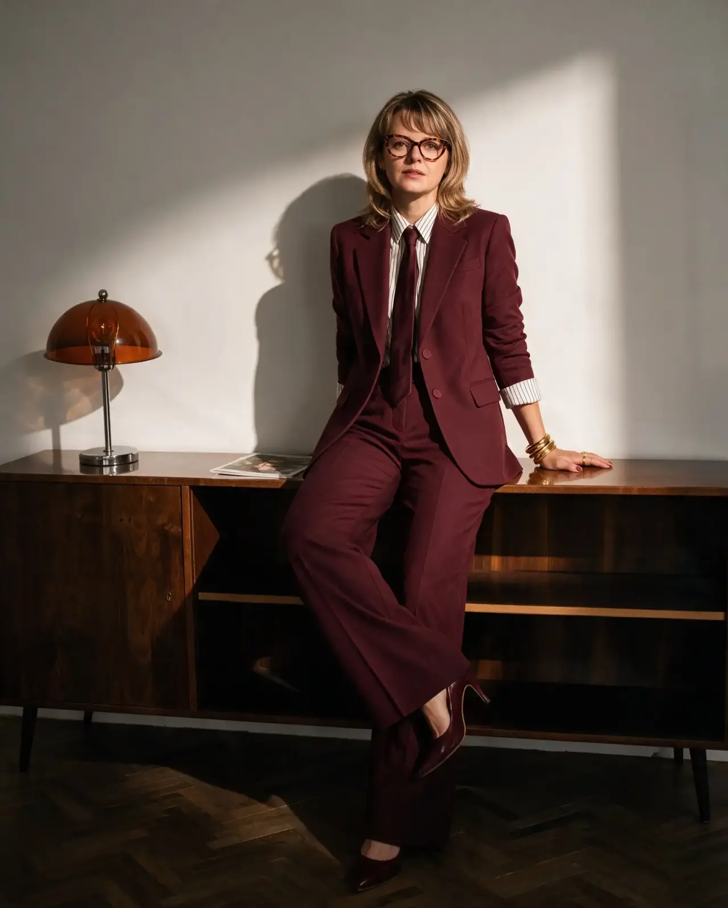
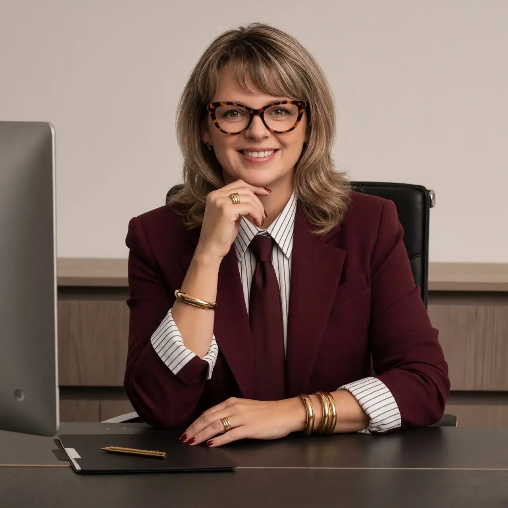

НЕ ПРОСТО
САЙТ –
А СИСТЕМА
Разработка сайтов, автоматизация и понятные digital-решения для бизнеса. Красиво снаружи. Продуманно внутри.

НАТАЛЬЯ ЩЕРБИНИНА · 2026
Технологии должны решать задачи, а не
создавать новые
Хороший digital-продукт не требует лишних объяснений. Человек быстро понимает, куда нажать. Команда знает, что происходит с заявками. Рутинные действия не отнимают рабочий день.
От проблемы к решению ↘Три направления –
Один принцип
Не ради красивых формулировок. Ради понятной задачи и работающего результата.
Разработка сайтов
Создаю современные сайты с продуманной структурой, удобной навигацией и понятным способом связаться с вами
↗02Автоматизация
Помогаю автоматизировать работу с заявками, клиентами и таблицами, чтобы сократить рутинные действия и освободить время для важных задач
↗03Digital-аудит
Проверяю сайты, сообщества и цифровые инструменты бизнеса. Нахожу слабые места и составляю конкретный план улучшений
↗МЕНЬШЕ
ХАОСА –
БОЛЬШЕ
ДЕЛА
Когда визуальный стиль и функциональность работают вместе, клиенту удобно, а бизнесу проще.
Показывать,
а не обещать
Один из примеров подхода: переводить сложные запросы в понятную последовательность действий.
запроса
задачи
маршрут
Навигатор косметологии
Пользователь не должен разбираться во внутренней кухне сервиса. Его задача: описать запрос и увидеть следующий понятный шаг.
заказов
соответствия
отклика
Помощник по заказам FL.ru
Программа для поиска и отбора заказов на бирже FL.ru. Помогает собирать предложения, оценивать их соответствие услугам специалиста, отслеживать статусы и готовить отклики. Для знакомства с проектом доступна интерактивная демоверсия с вымышленными данными

Лично,
вдумчиво и
по делу
Я Наталья Щербинина. Работаю с цифровыми задачами, где важны одновременно удобство, смысл и аккуратная реализация.
Предлагаю не шаблон ради шаблона, а решение, которое соответствует конкретной ситуации и остаётся понятным после запуска.
КАКАЯ
У ВАС
ЗАДАЧА?
Выберите, что актуально сейчас. Ниже появится пример направления работы.
Определим структуру и путь пользователя, чтобы человек понял предложение и легко связался с вами.